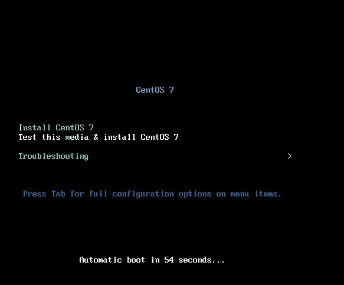
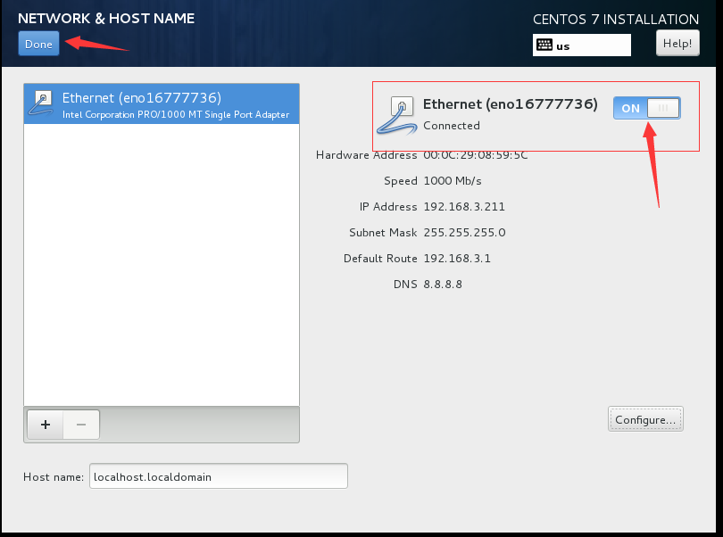

选择“Install Centos 7”

语言选择“English”

时区、时间设置

"点击 Date&TIme"
"分别选择 'Asia' 和 'Shanghai'"
磁盘分区

"点击 Installation Destination"

"在 'Other Storage Options' 的 'Partitioning' 中选择 'I Will configure parturition'，然后点击上方的 'Done' 按钮进入自主分配磁盘页面。"

"选择 ‘LVM’，然后点击上方的 'Click here to create them automatically'，进入下一个页面，进行分配。"
我的硬盘是50GB的，大家可以根据自己的情况进行调整，具体分配方案如下：
- System
- / 12.5GB 根目录
- /var 7.5GB *yum install*的软件会安装在这里
- /BIOS Boot 2048Kib
- /boot 500MB
- /usr 7.5GB 大量*yum install*的软件会安装在这里
- swap 2048MB 交换分区
- DATA
- /home 20GB 自己存储数据的地方，尽量不要放在*System*分区下。
"点击 'Accept Changes'"
网络设置
"点击选择 'NETWORK & HOST NAME'"

"点击 'Configure'"
"在'IPV4 Settings'选项卡中配置相关ip信息，由于我是在虚拟机中安装，并且选择了Bridge模式，因此和宿主机的网段一样。然后点击'SAVE'**"。

"将 'ETHERNET' 右边的按钮移到**'ON'，然后就会看到现在网络已经通了，点击'Done'"。
开始安装
"点击 'Begin Installation'开始安装"。
设置root密码
"点击 'Root Password'，进入root密码设置界面"
"输入自己的密码，然后点击 'Done'"。
安装完成，重启

"点击 'Reboot' 重启服务器，然后就可以登入系统了。"